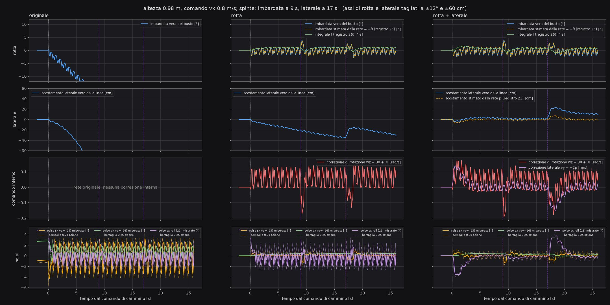

Project R.E.D. Pony · LLM editing of trained networks
Behaviours written into the weights
A trained robot policy is a stack of tables of numbers. We let an LLM read them, find the room inside, and write a new behaviour straight into the weights: no retraining, same network shape, same file format. Three robots, three edits, failed attempts included.
On real robotsThe edited H1_2 and drone networks run on the real robots. The figures and tables on this page come from simulation, where every trial can be repeated and measured; on hardware we are running a systematic campaign of experiments to build a larger pool of trials before reporting real-robot statistics.
The idea
Why edit a network by hand when you could retrain it?
Retraining needs the training stack, the reward design, the compute and a new round of sim-to-real validation. Often the network is almost right: it walks, it hovers, it squats, and fails at one specific thing it was never asked to do.
A small policy network is not a black box when you can read every number. Most of its units turn out to be idle, the ones that work have a readable job, and a nonlinearity like ELU is enough to build integrators, clamps, products and switches. So the missing behaviour can be written, in the same file, next to what the network already does.
Doing this by hand is slow and error-prone. An LLM agent is good at exactly the parts that are tedious for a person: reading weight files, writing probe scripts, running the simulator, keeping a log of what failed and why, and producing a reproducible builder script (original file in, edited file out).
RulesNo gradient descent or RL on the edited network. Same layer sizes. The original file is never touched.
AllowedReading weights and activations, probing in simulation, folding idle units away, writing circuits with ELU units, solving linear systems. Anything fitted to data is declared as such.
ShownEverything, in the order it happened, including the attempts that failed. Every number on this page comes from the experiment logs; drawings that are schematic say so.
Toolkit
What can you build out of ELU units?
Each hidden unit computes elu(w·x + b): the number itself on the right of zero, eᵘ − 1 on the left. With a few units and well-chosen weights you get every block a controller needs. The white curve is the exact function, the violet one is what the units compute.
The lesson that cost a crash
Add the correction before the fold, not after it.
In the drone experiment the network delivered the wrong thrust at most headings. The obvious fix was to add, at every heading, the thrust that was missing at the output. The value came out right, and the drone diverged in flight.
A unit pushed to the flat side of the ELU keeps a slope near zero. Adding a constant after the fold moves its output but not its slope, so the controller keeps the right value and loses its gain: at +90° the thrust reacted to height with 0.8 N/m instead of 61 N/m.
Adding the same amount before the fold slides the operating point back onto the straight side: same output, slope 1. Try the three presets: the output is the same 0.5 in the last two, the slope differs by a factor of twenty.
Exact ELU curve; the starting pre-activation −3 is an example unit, as in the original write-up.
Example 1 · Unitree H1_2 humanoid
Make a humanoid walk straight when nobody steers.
The walk-and-squat policy of the Unitree H1_2 (an MLP 465 → 512 → 256 → 128 → 27, trained with PPO in Isaac Lab and deployed on the real robot) walks well, but with the turn stick at zero it slowly turns: 2.84 °/s on average, 82° after 30 s. Its observations contain no heading and the network has no memory, so nothing inside it can notice the drift.
The edit gives the network a heading controller and a memory to run it:
- Make room. 20 / 9 / 5 redundant units of the three hidden layers are folded by least squares into the rest of their layer (action error rms 0.005).
- Write the circuit. Yaw rate from gyro and projected gravity, a heading-error integrator and its integral, with clamps and an on/off gate, all built from ELU units.
- Store the state in the actions. The two integrator states are written to the two wrist-yaw action channels and come back one step later through
last_action. - Steer through the network's own command. The correction is added to the turn command the original network reads, so the robot corrects with its own trained turning gait.
# the circuit (dt = 0.02 s) rate = −(ωy gy + ωz gz)(1 + gx²) act = gait clock running and |ωz,cmd| ≈ 0 θ' = clamp(θ + dt (ωz,cmd − rate), ±0.35·act) I' = clamp(I + dt θ, ±0.30·act) # memory: action 25 = 2θ, action 26 = 2I # read back next step through last_action ωz seen by the network = ωz,cmd + 3θ + 3I # second version: lateral hold v̂ = w · h1 + b # ridge readout, fitted p' = clamp(p + dt v̂, ±0.15·act) vy seen by the network = vy,cmd − 2p
The lateral velocity readout v̂ is the only part fitted to data (ridge regression on closed-loop rollouts, 3128 steady conditions).
Schematic. 0.8 m/s forward for 30 s with constant drift rates equal to the measured means (yaw 2.84 °/s for the original, lateral 2.13 and 0.32 cm/s for the two edits); real paths wobble with the gait. First panel: top view at equal scale. Second panel: lateral deviation in centimetres; the original leaves that window within a few metres.
| Python MuJoCo replica of the controller | original | heading hold | heading + lateral |
|---|---|---|---|
| Mean absolute yaw rate (28 commands, 30 s) | 2.84 °/s | 0.017 °/s | — |
| Mean absolute yaw after 30 s | 81.8° | 1.05° | — |
| Rms distance of the path from a straight line | 34.8 cm | 1.2 cm | — |
| Mean absolute lateral drift (60 commands) | 31.2 cm/s | 2.13 cm/s | 0.32 cm/s |
| Worst lateral deviation in 30 s | 20.3 m | 2.25 m | 0.62 m |
| Mean action change per step (legs, torso) | 0.087 | 0.090 | — |
| Falls | 0 | 0 | 0 |

SeenNo hidden unit was unused, but some were redundant: folding them away cost an action error of 0.005 rms.
UnderstoodThe best place to inject a correction is an input the network already understands (here the turn command), not the joints.
PriceThree wrist joints became memory registers, and a gyro bias b still turns the robot at b.
Code, edited ONNX files and weight_edit.json: examples/h1_heading_hold. Source policy: H1_2_Squat_Locomotion_RL (Apache-2.0).
Example 2 · Quadrotor hover network
Teach a hover network to turn its nose.
A hover policy, an MLP 17 → 512 → 512 → 4 run every 20 ms, holds a quadrotor within 2.7 cm of its target. It reads velocity, attitude, position error, and sin/cos of the yaw error, and outputs thrust and three body rates. In training the yaw reward had weight zero.
Probed with the drone still, level and at zero error, the network does not ignore yaw at all: its yaw-rate command has an attracting rest point near −50° and a repelling one near +140°, whatever the reference. Thrust equals the weight only near −50°. The network built its own operating point.
Pick a reference and a starting heading, then release both drones. The left one runs on the measured outputs of the original network, the right one on the rewritten yaw command.
Left, measured: yaw-rate command of the original network at zero error, 8 headings, linearly interpolated. Right, exact: the rewritten command ωz = 0.8·lim(1.25 sin e + 0.6 (h⁺ − h⁻)). Nose only: no position, delay or noise.
Exact: φᵢ = elu(20 (cos(ψ − ψᵢ) − cos 50°)), 23 centres every 15.7°, valid level and to first order in the tilt.
Neurons that measure where the nose points
413 of the 512 first-layer units and 490 of the 512 second-layer units are idle (usage below 10⁻³ over 200 000 states). An idle unit is freed by removing its connection and adding its constant contribution to the next bias: the output does not change.
The attitude matrix already contains cos ψ and sin ψ. A freed first-layer unit with the right weights computes cos(ψ − ψᵢ); subtract cos 50°, scale by 20, pass through the ELU, and you get a bump that lights up only within ±50° of its centre. 23 freed units became yaw sensors.
With them, the second-layer pre-activations are shifted so that at every heading they equal those of the network's own equilibrium at −50°: Φ C = D, 23 equations, 23 unknowns, no fit, no optimisation.
The path, failed attempts included
- read
Read the file before running it.
The yaw-error columns have norm 0.62 / 0.59, a third of the weakest other input. But the normaliser remembers a mean heading: an arrow of length 0.79 towards −36°. The visited states were not uniform in yaw.
- probe
Probe at zero error.
Sweeping only the heading: attracting point near −50°, repelling near +140°, thrust ≈ the weight only near −50°.
- probe
Broken, or just shifted?
Yaw frozen at 24 headings: the drone stops everywhere without oscillating, up to 1.43 m lower. A stable controller at every yaw, with the wrong operating point. And it brakes a 0.5 m/s motion at every yaw: it learned to rotate velocity into the body frame, a product that cannot be written by hand in the first layer.
- room
Count the idle units.
413 / 512 and 490 / 512 idle. More than 80 % of the network is constant.
- works
The yaw command.
Disconnect the old yaw error and write a new path sin(error) → unit → unit → ωz. Two extra units make a steep step near ±180°, where sin = 0 left a 157° error stuck; now about 3°.
- fails
Add the missing thrust at the output.
Right value, wrong gain: at +90° the thrust reacts to height with 0.8 N/m instead of 61 N/m, and the flight diverges. See the fold.
- idea
Neurons that measure yaw.
23 freed units become bump-shaped yaw sensors.
- half
Exact shift before the last fold.
The offset disappears (error 1–5 cm after settling), but with 40 ms of delay the thrust oscillates at 15 headings out of 24.
- diagnose
Why it oscillates.
Far from −50° the vertical gain triples, up to 46 N/(m/s), above the
Gτ/m = π/2limit of a delayed loop (38.8 at 40 ms). The lateral response flips from brake to push. - works
Two branches, two cures.
Freeze yaw in the 277 first-layer units that hardly see horizontal velocity; shift only the 215 second-layer units that weigh on thrust. Each cure alone fixes one branch and spoils the other; together: error below 2.1 cm at every yaw, steady thrust up to 40 ms of delay.
- fails
First full-simulator flight: the takeoff.
44 N at start, climbs at 2 m/s, cuts thrust, hits the ground at 2.2 s. The offset we removed was also braking the climb. Two units on the height error now limit it (20 N/m).
- false alarm
The next flight aborts at 1.76 s.
Altitude jumps from 0.63 to 1.47 m in 20 ms: 42 m/s, impossible. A second simulator was publishing on the same channel. A plausibility check on the log avoided fixing a defect that did not exist.
- works
The cube falls 6 times out of 6, then passes.
At 1.8 m of height error the limiter removed 29 N, three times the hover thrust. One more unit gives it a ceiling (max 22 N). The cube passes with 1 cm steady error; every flight was repeated with the final file.
The final recipe: eight moves, about 21 000 of 272 896 weights
- Disconnect the yaw error from the old network (its zero-error value goes into the bias).
- Retire 28 idle units in layer 1 and 5 in layer 2.
- Freeze yaw in 277 layer-1 units: they see the nose at −50°.
- Let the network settle at −50° and read its true equilibrium (nothing written).
- Write 23 yaw-sensor bumps in layer 1 and the exact shift on 215 layer-2 units.
- Three units cancel the remaining output residuals (harmless now: units sit on the right side of the fold).
- New yaw command following sin(error), limited to 0.8 rad/s, with a steep step near ±180°.
- Climb limiter: two units on the height error plus a ceiling, at most 22 N.
3660 + 16 756 + 527 = 20 943 weights changed, almost all of them biases. The saved file reproduces the computed network within 3.6·10⁻⁴ on the outputs.
| Yaw mission, full simulator | reference | jump | original error | edited error | time to <10° | position | peak |
|---|
| Mission summary | original | edited |
|---|
SeenA network trained with no pressure on yaw still depends strongly on yaw: zero training error says nothing about what it does elsewhere.
UnderstoodValues live after the fold, gains live in which side of the fold each unit sits on. Every behaviour you remove must be replaced or checked.
On the real droneThe edited network flies on the real quadrotor. The numbers above are from simulation; the systematic flight campaign under way is building a larger pool of flights.
Write-up with all the numbers: examples/drone_yaw. The code lives in the AC-MPC research repository and is not published here.
Example 3 · SOLO-12 quadruped
Break a leg, then rewrite the network to walk on three.
Experiment running
The first two examples added a missing behaviour. This one asks for more: the robot changes under the network. We train a walking policy for the open-source SOLO-12 quadruped (Open Dynamic Robot Initiative) in MuJoCo, disable one leg, measure how the original policy fails, and let the LLM edit the network until the robot walks on three legs, with the same rules: no gradient steps on the edited network, same shape, every fitted part declared.
- Train a velocity-tracking walking policy (PPO, MLP with ELU, non-privileged observations).
- Disable one leg in simulation and measure the original policy on three legs.
- LLM edit: probe, free idle units, write the circuits, test, look at the failures, repeat.
- Compare original on 4 and 3 legs, edited on 3 and 4 legs.
StatusResults, videos and the edit will be published here when the experiment is complete, whether or not it succeeds.
Method
The editing loop, as the LLM runs it.
Read
Load the weights and the normaliser. Column norms, means, which inputs the network barely reads. Cheapest test, often the most telling.
Probe
Run the network on controlled states: sweep one variable, freeze the rest. Find what it really does, not what the reward asked for.
Make room
Measure unit usage over many states. Fold idle or redundant units into the next bias or into their neighbours by least squares.
Write
Build the missing behaviour from ELU units: sensors, integrators, clamps, gates. Inject it where the network already listens, before the fold.
Test
Fast simulator first, then the full one. Fixed protocol, the original as a baseline, delay and disturbances on.
Look at failures
Diagnose before editing again: gains, operating points, logs. Check that the defect is real. Bound every correction.
Every edit ends as a builder script that takes the original file and produces the edited one, plus a weight_edit.json with the freed units, the parameters and the sha256 of both files. The edited network is a normal ONNX MLP: the deploy code does not change.
Limits
What this does not show.
- Real-robot statistics are still coming. The edited H1_2 and drone networks run on the real robots, but the measurements on this page come from simulation: a Python replica of the H1_2 controller, a fast and a full simulator for the drone, without sensor noise. A systematic real-robot campaign is under way to collect a larger pool of trials; until it is done we do not report hardware success rates.
- Robustness. The original networks were trained with domain randomisation; the edits are built on one model. How much robustness survives has not been measured systematically yet.
- Hand-tuned parameters. Thresholds, gains, number and shape of the sensor units were chosen with few attempts. They work; how far they are from the edges is mostly unknown.
- Side effects. H1_2 gives up three wrist joints as memory; the drone's limiter is tuned to one hover thrust and one motor curve.
- Statistics. The simulators are nearly deterministic: a few repetitions measure repeatability, not robustness. No confidence intervals are claimed.